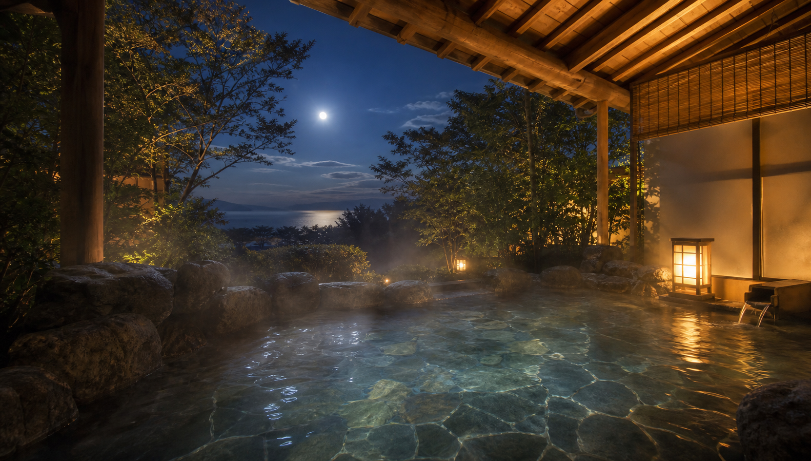

ONSEN / ONS-0417
海側露天、内湯、貸切風呂のご案内です。湯雨戸の開閉、夜間点検、荒天時の制限もこちらで確認できます。

湯冷めしにくい、やわらかな肌あたりの湯です。
翌朝は6:00より利用できます。清掃時間は浴場を閉鎖します。
海風が強い日は露天風呂の一部を閉じます。
23:30以降は足元灯のみ点灯します。湯雨戸の作動音が聞こえる場合がありますが、点検中は浴場へ立ち入らないでください。